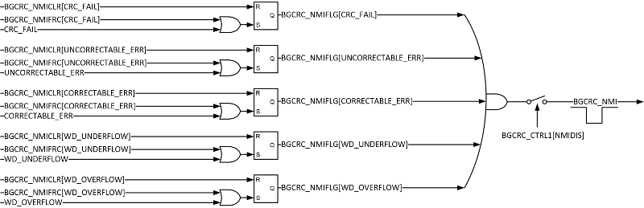
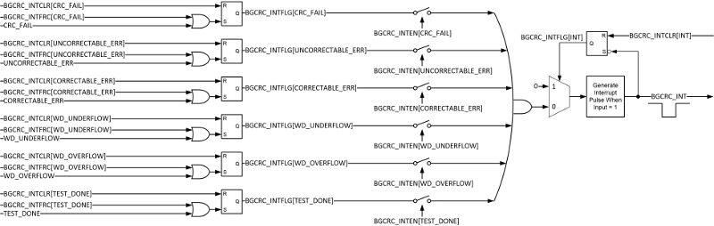

Background CRC (BGCRC)#
A cyclic redundancy check (CRC) is an error-detecting code that is commonly used in digital systems. Some C2000 devices feature the background CRC (BGCRC) module, which computes the CRC value in hardware. The CRC method is very useful in safety-critical applications. This module describes the BGCRC module, its operation and features.
Overview of the BGCRC module#
The Background CRC (BGCRC) module computes a CRC-32 check value on a configurable block of memory. It accomplishes this by fetching the specified block of memory during idle cycles (when the CPU, CLA, or DMA is not accessing the memory block). The calculated CRC-32 value is compared against a golden CRC-32 value to indicate a pass or fail. In essence, the BGCRC helps identify memory faults and corruption. There are two BGCRC modules, CPU_CRC and CLA_CRC. The two BGCRC modules differ only in the memories they test.
Features#
The BGCRC module has the following features:
One cycle CRC-32 computation on 32 bits of data
No CPU bandwidth impact for zero-wait-state memory
Minimal CPU bandwidth impact for non-zero-wait-state memory
Dual operation modes (CRC-32 mode and scrub mode)
Watchdog timer to time CRC-32 completion
Ability to pause and resume CRC-32 computation
Functional Description#
The CRC-32 calculation can be initiated by configuring the register BGCRC_EN.START to 1010. Once started, the module will perform the background memory checks without CPU or CLA intervention. However, on completion of the CRC-32 calculation or in the event of an error, the CPU or CLA will be notified through an interrupt or task, respectively.
There are two BGCRC modules:
CPU_CRC : It is configurable by the CPU and can only generate an interrupt.
CLA_CRC : It can be configured by both the CPU and CLA and can generate an interrupt to the CPU or task for the CLA.
Data Read Unit#
Once the CRC-32 calculation is started, the BGCRC module will continuously read data from memory as a background process. These reads happen during the idle times (when the CPU, CLA or DMA is not accessing the memory block) and hence will not impact functional access. The data-read-unit will only read data if there is no pending functional access. The data-read-unit begins the operation by reading a block of data of size BGCRC_CTRL2.BLOCK_SIZE from address BGCRC_START_ADDR. Note that BGCRC_START_ADDR must be 0x80 word aligned. For a non-0x80 word aligned BGCRC_START_ADDR, the least significant bits will be zeroed out to get a 0x80 word-aligned BGCRC_START_ADDR. For instance, if the programmed BGCRC_START_ADDR = 0x1AF3, the internal 0x80 word-aligned start address will be 0x1A80.
When the data-read-unit reads a block of data, ECC or parity will be checked. Any ECC or parity errors that occur during the read will be indicated by setting the respective NMI flag and generating an interrupt, if configured accordingly. The BGCRC module, however, will not write back the corrected memory contents on the occurrence of a correctable ECC error. Writing back the corrected values should be handled by the application.
CRC-32 Compute Unit#
After the data-read-unit reads a block of data, it feeds this data to the CRC-32 compute unit. This unit computes the CRC-32 using the standard polynomial 0x04C11DB7 given below : \[x^{32} + x^{26} + x^{23} + x^{22} + x^{16} + x^{12} + x^{11} + x^{10} + x^8 + x^7 + x^5 + x^4 + x^2 + x + 1 \]
The CRC-32 unit retrieves 32-bit of data at a time from the block of data to compute the polynomial. This computation takes 1 cycle.
For instance, the CRC-32 calculation for 1KB block of data will be 256 cycles, 1 cycle for each of the 256 32-bit chunks. The initial value for the CRC-32 computation can be configured using BGCRC_SEED.
After the CRC-32 calculation is complete for a data block, the final result is loaded into BGCRC_RESULT. Note that BGCRC_RESULT will only contain the final calculation for the whole data block; intermediate results will not update BGCRC_RESULT. The value in BGCRC_RESULT will be compared against the value in BGCRC_GOLDEN by the module and the NMI/Interrupt flags will be set accordingly by the CRC notification unit.
Once CRC-32 calculation is commenced, it can be halted by setting BGCRC_CTRL2.TEST_HALT to 1010. Clearing this bit resumes CRC-32 calculation from the halt point.
CRC Notification Unit#
After the CRC-32 compute unit completes the CRC-32 calculation for a block of data or fails to complete the calculation within BGCRC_WD_MIN and BGCRC_WD_MAX, if configured, it will send out a NMI/Interrupt on the occurrence of a pass or fail. In addition, during a data read by the data-read-unit, if an ECC or parity error occurs, the CRC notification unit can send out a NMI/Interrupt. In the case of an ECC or parity error, the BGCRC will stop operation and BGCRC_CURR_ADDR will contain the memory address which caused the ECC or parity error. The contents of BGCRC_CURR_ADDR in addition to the NMI/Interrupt flags can be used to debug a BGCRC failure.
CPU Interrupt and Non-Maskable Interrupt (NMI)#
The BGCRC module has configurable Interrupt and NMI lines. NMIs are enabled by default but can be disabled by writing 0xA to BGCRC_CTRL1.NMIDIS register. Conversely, all Interrupts are disabled by default but can be enabled by writing 0x7E to BGCRC_INTEN register. When an error occurs in the BGCRC, it can be configured to generate an NMI or Interrupt. Since NMIs are enabled by default, all BGCRC errors will cause an NMI.


Resources#
Feedback
Please provide any feedback you may have about the content within C2000 Academy to: c2000_academy_feedback@list.ti.com